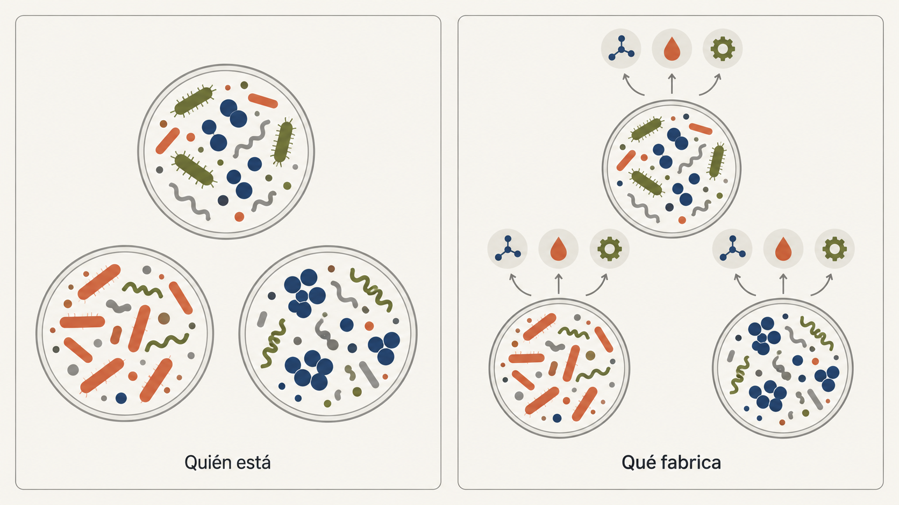
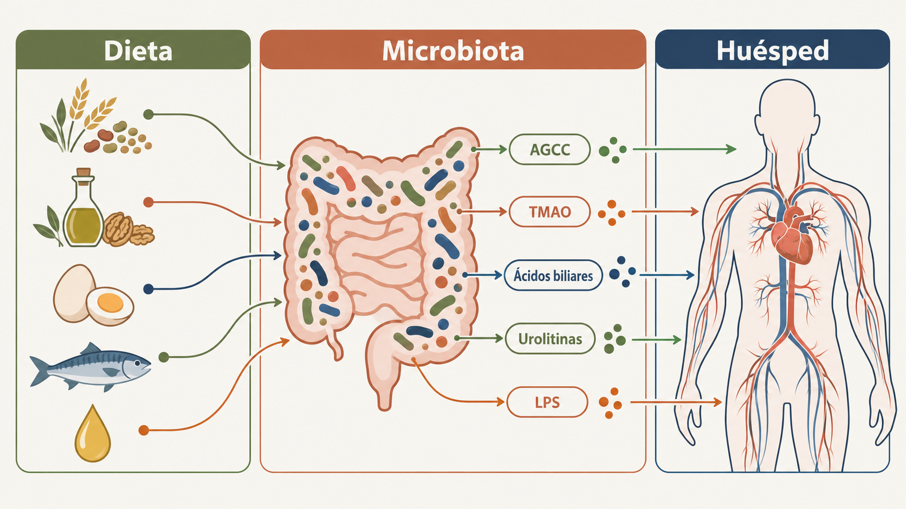
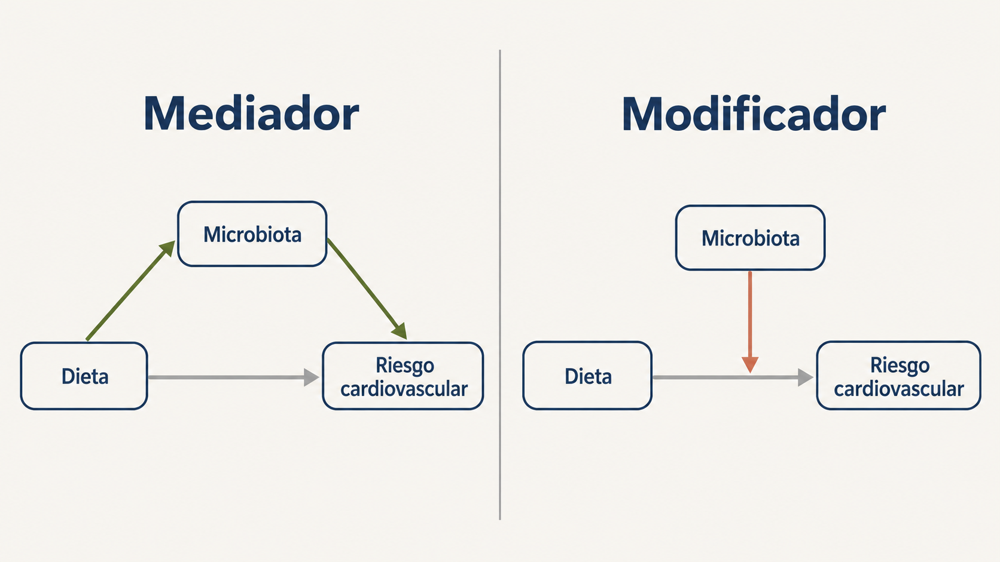

Qué sabemos (y qué no) del papel de la microbiota intestinal en la protección cardiovascular de la dieta mediterránea
Que la dieta mediterránea protege el sistema cardiovascular es una de las afirmaciones mejor respaldadas por la epidemiología nutricional. Hay cohortes con décadas de seguimiento y ensayos con eventos bien definidos en prevención primaria y secundaria (en uno de estos últimos, con pacientes coronarios, el riesgo de nuevos eventos bajó un 27 % frente a una dieta baja en grasa) que lo demuestran. Lo que no sabemos con exactitud es el porqué. La microbiota intestinal se ha convertido, en los últimos tiempos, en una candidata a explicarlo. ¿Es realmente la pieza que falta o una más? En parte, sí, pero esa parte es más pequeña y más difícil de medir de lo que se sugiere.

Ha habido una evolución en el estudio de la microbiota que ha cambiado la forma de valorarla. Hemos pasado de catalogar bacterias a medir lo que hacen y de separar lo que es un mecanismo plausible de lo que es una asociación o de lo que está listo para ser útil en la clínica. De esto último, por desgracia, aún hay muy poco.
¿Qué hacen las bacterias?
El primer cambio de enfoque, y probablemente el más importante, es dejar de pensar en la microbiota como una lista de especies. La abundancia de un género concreto varía según la geografía, la medicación, la dieta habitual e incluso la plataforma de secuenciación, de modo que buscar "la mejor bacteria de la dieta mediterránea" es poco fiable, exacto y reproducible. Lo que sí se repite de un estudio a otro, como se ha visto en una revisión reciente, son las funciones metabólicas. Es más interesante saber qué se fabrica que quién está.

La dieta mediterránea es, desde el punto de vista de una bacteria, un menú muy particular: fibra fermentable, polifenoles del aceite de oliva virgen extra y de las nueces, grasas insaturadas y poca carne roja o procesada. Con ese sustrato, las vías objetivo a estudiar se reducen a unas pocas:
- Los ácidos grasos de cadena corta (acetato, propionato, butirato), que se obtienen de la fermentación de la fibra y se relacionan con la presión arterial, la inflamación y la barrera intestinal, son los más consistentes y mejor relacionados con la adherencia a la dieta mediterránea, aunque casi todo lo que sabemos viene de modelos animales y de heces, y debemos considerar que la concentración fecal dice poco de lo que llega a la sangre.
- También tenemos el TMAO, un metabolito con amplia literatura, incluso previa al inicio del estudio de la microbiota. Las bacterias convierten la colina y la carnitina en trimetilamina. El hígado la oxida a TMAO, proaterogénico y protrombótico en modelos experimentales. Pero su concentración en plasma depende también de la función renal, del perfil genético del individuo y del consumo de pescado, rico en este metabolito. La aleatorización mendeliana no se pone de acuerdo sobre su papel causal.
- Otro actor de interés son los ácidos biliares secundarios, que las bacterias transforman a partir de los primarios y actúan casi como hormonas sobre el metabolismo lipídico y glucídico.
- Relacionados con varios alimentos de origen vegetal clásicos de la dieta mediterránea tenemos los metabolitos fenólicos, como las urolitinas, que nuestra microbiota fabrica a partir de los elagitaninos de las nueces y que pueden mostrar, de forma casi objetiva, si una persona realmente se adhiere a este patrón.
- Finalmente, también tenemos procesos relacionados con la microbiota que ejercen efectos sobre el organismo. La endotoxemia es la llegada de lipopolisacárido bacteriano a la circulación cuando la barrera intestinal falla y produce la consiguiente inflamación de bajo grado.
Integrar metagenómica, metabolómica y fenotipo como un contexto interrelacionado, en lugar de quedarse en la taxonomía, es justo lo que se viene defendiendo desde hace unos años. La combinación de metagenómica y metabolómica fecal ha permitido identificar especies del género Oscillibacter capaces de metabolizar el colesterol, asociadas a niveles más bajos de colesterol en heces y en plasma, mostrando una función con un mecanismo detrás, y no solo una correlación entre un género y una enfermedad.
¿Qué pasa cuando se interviene?
En los ensayos de intervención, el hallazgo más repetido es el enriquecimiento de bacterias productoras de butirato y un desplazamiento hacia la fermentación de hidratos de carbono (sacarolítica) en detrimento de la fermentación de proteínas, más asociada a metabolitos proinflamatorios.
En un ensayo aleatorizado que publicamos en 2024, con 400 personas de entre 55 y 75 años y alto riesgo cardiovascular, comparamos durante un año una dieta mediterránea con restricción energética y promoción de la actividad física frente a una dieta mediterránea sin restricción energética. El grupo de intervención perdió más peso y mejoró sus factores de riesgo, pero también aumentó la diversidad alfa de su microbiota y modificó subredes enteras de metabolitos fecales (especialmente ácidos biliares, ceramidas, esfingosinas y carnitinas), y varios de esos cambios se asociaron con la mejora de los factores de riesgo cardiovascular. El cambio no se limitaba a un taxón aislado. Vimos una coordinación entre el microbioma y el metaboloma.
En otros ensayos cruzados con personas con síndrome metabólico, con frecuencia, los parámetros cardiometabólicos mejoran sin que cambien apenas los índices globales de diversidad y los cambios se observan en metabolitos concretos (acilcarnitinas, ácidos biliares, intermediarios lipídicos). Desde mi punto de vista, esto nos señala un límite al que la ciencia, en ocasiones, no hace caso, ya sea por algunos de los cientos de sesgos que tenemos los investigadores o simplemente por la necesidad de demostrar algo. Quizá nuestras métricas no sean correctas. En este sentido, la diversidad alfa, una métrica de la microbiota que mide la variedad y el equilibrio de los microorganismos presentes en una sola muestra, es un resumen demasiado grueso de lo que la dieta hace en un ecosistema con miles de especies. Como comentaba hace unas semanas sobre los biomarcadores en metabolómica, la capa funcional es la que aporta información y la que más cuesta estandarizar.
¿Mediador o modificador?

Para mí, es la distinción más interesante del tema y la que genera la mayor confusión. Que la microbiota sea un mediador significa que forma parte del camino causal: la dieta cambia la microbiota y ese cambio, en parte, produce el beneficio cardiovascular. Sin embargo, que sea un modificador significa que la microbiota que tienes condiciona cuánto te beneficias de la dieta, aunque no sea quien transmita el efecto.
Hay evidencia de ambas cosas. Sobre la mediación, hay un análisis en un ensayo con 294 personas que sitúa la parte del efecto de la dieta mediterránea sobre la adiposidad y el riesgo cardiovascular que "pasa" por el microbioma en torno al 10–20 %. Es una cifra razonable y quizá demasiado optimista. Un análisis de mediación exige, entre otras cosas, que no haya confusión no medida entre el mediador y el desenlace y que el orden temporal esté claro y aquí trabajamos con un mediador de altísima dimensión medido, con suerte, dos o tres veces a lo largo del estudio. Son estimaciones que, a día de hoy, es muy difícil replicar y demostrar.
Sobre la modificación, los datos quizá sean más sugerentes. En un estudio longitudinal con 307 hombres (de hace unos años, pero sigue siendo la referencia), la asociación protectora entre la dieta mediterránea y el riesgo cardiometabólico era claramente más fuerte en quienes tenían menos Prevotella copri. Y en otro ensayo, de 18 meses y 284 participantes, con 44 ácidos biliares fecales medidos por espectrometría de masas y metagenómica, los niveles basales de algunos ácidos biliares modificaban el efecto de la dieta: la reducción del índice de masa corporal era mayor en quienes partían con menos ácido 12-deshidrocólico. La misma dieta, en intestinos distintos, no produce el mismo resultado.
Lo que no sabemos (que es bastante)
El límite principal son los desenlaces. Casi todos los estudios miden peso, resistencia a la insulina, lípidos o inflamación, no infartos, ictus ni muertes. En algunos que sí se ha mirado (por ejemplo, el ensayo de prevención secundaria que mencionaba al principio), en pacientes coronarios, una mayor endotoxemia tras la comida se asoció con más eventos recurrentes a lo largo de 7 años. Pero en ambas dietas, la mediterránea y la baja en grasa, se redujo el lipopolisacárido, por lo que el mecanismo no es exclusivo de la dieta mediterránea.
A eso se suman los clásicos de esta área de conocimiento: una considerable heterogeneidad metodológica (definiciones distintas de adherencia, 16S frente a la metagenómica, plataformas de metabolómica que no comparten nomenclatura...) y muestras pequeñas. Hasta ahora, ningún biomarcador candidato ha sido validado externamente con umbrales clínicamente interpretables. Y los análisis multiómicos, por sofisticados que sean, siguen siendo mayoritariamente transversales: describen covariación, pero no dicen quién empuja a quién. Por lo tanto, a pesar de generar conocimiento, este no es transferible (y, en ocasiones, ni siquiera es validable).
¿Y la nutrición de precisión?
Creo que la promesa más extendida en esta área es la nutrición de precisión. La promesa de personalizar la dieta según la microbiota. Ya hay grupos y publicaciones que lo han probado, pero de momento, los resultados son modestos para el coste que supondría poner en marcha un sistema de este tipo (pronto hablaré de esto).
La lectura honesta de la evidencia es, diría, bastante sobria. La dieta mediterránea está respaldada como estrategia de prevención cardiovascular con o sin microbiota de por medio. Lo que no está respaldado es perfilar la microbiota de forma rutinaria, medir el TMAO en la consulta ni prescribir dietas guiadas por el microbioma. Para eso harían falta biomarcadores validados externamente, demostrar que aportan algo más allá de los factores de riesgo clásicos y, sobre todo, ensayos pragmáticos que comparen el consejo mediterráneo estándar con un consejo mediterráneo informado por la microbiota, con desenlaces clínicos y análisis de coste-efectividad. Ese ensayo, que yo sepa, todavía no existe.
Mientras tanto, lo que sí cambia es la pregunta que nos hacemos. Durante años, la investigación ha preguntado si la dieta mediterránea funciona y la respuesta es que sí. La microbiota no va a cambiar esa respuesta, pero sí podría explicar por qué a algunas personas les funciona bastante mejor que a otras, lo cual es la pregunta que de verdad tenemos pendiente.